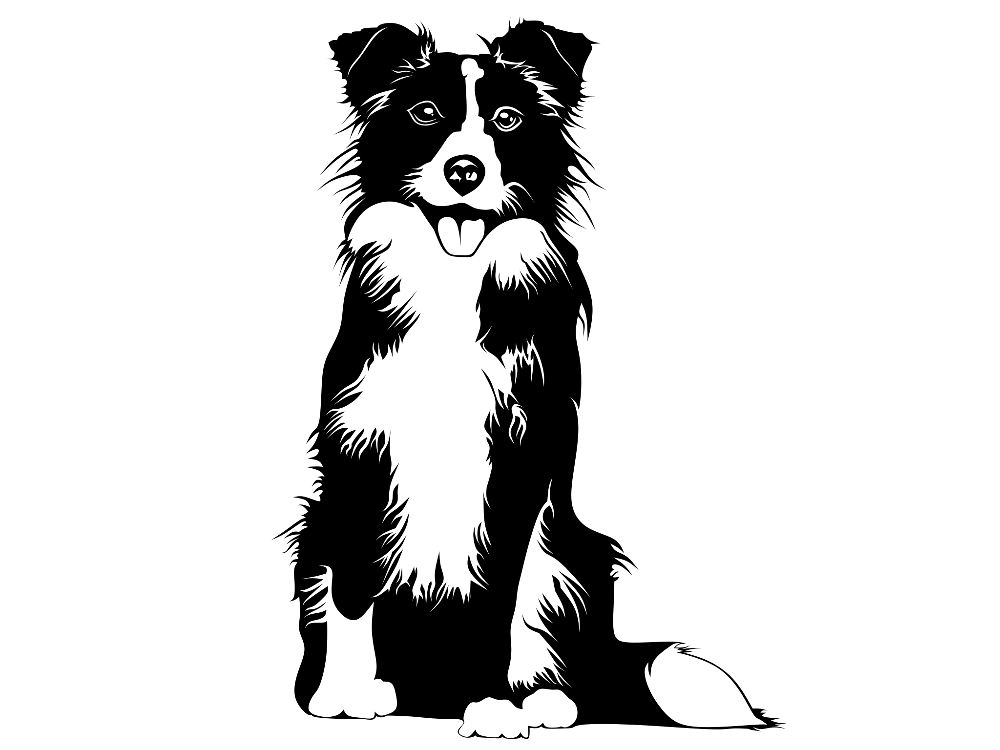

Photos & Graphics
Format: JPEG. Size: 213KB. Best for high detail photos with lossy compression.

Format: AVIF (HDR). Size: 191KB. Uses 12-bit color for better highlights/shadows.
Format: JPEG. Size: 213KB. Best for high detail photos with lossy compression.
Format: AVIF (HDR). Size: 191KB. Uses 12-bit color for better highlights/shadows.

Format: SVG (Scalable Vector Graphics)
Size: 136KB. Use: Since this is math-based, it stays sharp at any zoom level. Perfect for logos.

Format: AVIF (HDR Enabled)
Size: 45KB. Use: This uses 10-bit color depth to display higher peak brightness and more colors than a standard PNG/JPG.
GIF Animation:

Sound Sample:
YouTube Video:
AR Video